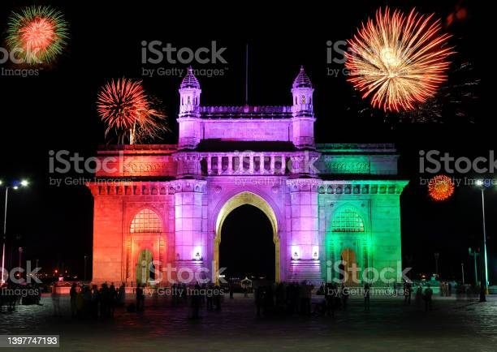
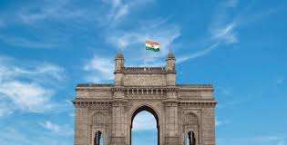

Meenakshi Amman temple

Meenakshi Temple is one of the big and beautiful temples in Tamil Nadu, India. The temple located in the heart of Madurai town. The temple built during the rule of Nayak, who were the famous rulers of Tamil Nadu. Hence the temple has been known as Meenakshi-Sundaraswaran Temple and dedicated to Goddess Meenakshi, the consort of Lord Shiva. Here always fifteen priests served to perform the rituals of the Temple. A large number of Indian and foreign tourists visit this Madura Meenakshi temple daily. For the people of Madurai, the temple is the centre of rich culture and religious harmony among all. Since the Meenakshi Amman temple is one of the greatest ‘Devi’ temples in India and sacred place for the Hindu devotees.
The history of Meenakshi Amman
The Meenakshi Amman temple is dedicated to the couple, Goddess Parvati and Lord Shiva. Meenakshi was born out of a sacred fire and had three breasts. Right after her birth, a heavenly voice assured her parents, a Pandyan king, and his wife, that the third breast of their daughter will disappear the day she will meet her husband. Meenakshi grew up to be a great warrior and took over the throne after her father. The ambitious queen went on to conquer multiple adjoining kingdoms. Soon she set out to take possession of the Kailash and met Lord Shiva. At that moment, her third breast fell off, indicating that she had met her husband. The couple came back to Madurai for their wedding ceremony. The wedding was presided over by Lord Vishnu following which the couple ruled the Madurai kingdom, and are still believed to watch over the city and its devotees.
Temple Struture


The foundation of the temple is believed to have been laid in the 7th century C.E. However, the temple we see today was built in the 16th and 17th centuries. The temple is situated in the centre of Madurai and is spread over 56,700 square meters of land. The entire construction is a well-planned one, and a bird’s eye view depicts a mandala.
Significance of Meenakshi Temple
The temple is a tribute to the power of a woman and represents the importance of the women in a family. It is a ritual to offer the prayers to Meenakshi before worshipping Sundareswarar. It is also believed that Lord Shiva performed a cosmic dance in the halls of the Sundareswarar shrine. It is in this temple that Shaktism, Vaishnavism and Shaivism form a union.
Every year numerous festivals are celebrated in this 2500 years old temple. The Golu festival is a ten-day-long festival, celebrated during the Navratri. Golus or small idols are made that portray the characters of mythological stories. Meenakshi Thirukalyanam is another major festival that rejoices the union of gods and goddesses.
The Potramarai Kulam
This is the pond located right in the middle of the temple and considered sacred by the devotees. What makes this water body so special? Well, it is the pond with a golden lotus, which is the direct translation of its name. The pond features a golden lotus in the centre and has no marine life by the benediction of Lord Shiva.
The Mandapams
Mandapams are halls standing on firm pillars, dedicated to many deities. The main purpose was to provide a relaxing place for the pilgrims. Ashta Shakthi, Swamy Sannidhi, Nayaka, Kilikoondu are some major mandapams in the temple arena.
The Gopurams
Fourteen massive gopurams surround the entire temple and lead to the shrines. Out of these gateways, five are considered to be the most important. The Nadukattu, Sundareswarar Shrine, Mottai, Chitra, and Kadaka Gopurams are considered as the primary ones. These gateways have a multi-level structure, where each level is adorned with picturesque carvings that describe narratives from the mythology. The southernmost gopuram is the tallest of all, having a height of 170 feet.
Mahadeva Temple

Kandariya Mahadeva Temple it dates back to the 10th century CE. It is 109 feet high and 60 feet wide . The interior arrangement of the temple differs from the usual construction of a Hindu temple as it has an open passage around the sanctum, thus forming a high altar at the inner portion of the temple. The walls of the Kandariya temple carry nearly nine hundred images.The height of the figures varies from 2.5 feet to 3 feet. The entrance of the temple is in the shape of an arch and is decorated with figures of deities and musicians. Also, the entrance of the sanctum has elaborate floral carvings interspersed with figures of ascetics engaged in penance.
Fascinating History of Legendary Kandariya Mahadeva Temple
When it comes to the temples in Khajuraho, most of them were built between 950 and 1050 CE during the Chandela dynasty. The Kandariya Mahadeva temple, which is the largest Shaiva shrine dedicated to Lord Shiva was built during the period 1017 – 1029 CE by Vidyadhara, who was the successor of King Ganda. Lord Shiva who is believed to be the Supreme God is also called Mahadeva. This temple of Kandariya Mahadeva was built to celebrate Vidyadhara’s victory over Mahmud of Ghazni. He dedicated it to his family deity God Shiva. You can find the epigraphic inscriptions on the pillar of the mandapa, which mentions ‘Virimda’, the pseudonym of Vidyadhara.
The female figures at the base of the jambs are identified to be Goddess Ganga (River Ganga) and Goddess Jumna (River Yamuna). The Goddesses are accompanied by their respective vehicles, the crocodile and the tortoise. Inside the sanctum stands a marble linga, the symbol of Lord Shiva. There are also numerous figures of apsaras or nymphs in all sorts of delicate postures.
Architectural Structure of Kandariya Mahadeva Temple
The architecture and the decorative art found everywhere is deliberately symbolic. You can find that they represent a standard pattern of Hindu iconography, which include the depictions of “kama, artha, dharma and moksa”, essential pursuits of life.
The architecture of the Temples of Khajuraho is very complex. The main components of these temple are:
- The Garbhagriha (sanctum sanctorum) with antarala, a narrow ante-chamber
- The Maha Mandapa, a large hall
- The Ardha Mandapa and a mandapa, which are smaller additional halls
- The Pradakshina Path, a circumambulation path.
A few temples at Khajuraho are of the Panchayatana type, with four shrines dedicated to the divinities and often another shrine in front of the portico dedicated to the vahana (vehicle) of the principal deity.
-
With 31 meters long, 20 meters wide and 31 meters high, the Kandariya Mahadeva temple is characteristically built to look the grandest in Khajuraho. If you observe it carefully, you can see that the temple has a five-part design layout. A torana at the entrance showcases the intricate craftsmanship of the period on the single-stone sculptures. The highlights of the carvings on the stone of tactile quality represents the symmetrical design found everywhere, including the ‘high-relief carvings’ of sculptures. Intricately chiseled sharp inscribed lines exhibit splendid dark-light patterns, as well as strong angular forms, a semblance of the high quality of ornamentation.
“गुफा के महान देवता” यानी कंदारिया महादेव मंदिर – Kandariya Mahadeva Temple
“गुफा के महान देवता” यानी कंदारिया महादेव मंदिर – Kandariya Mahadeva Temple
Red Fort

Red Fort Complex was built as the palace fort of Shahjahanabad – the new capital of the fifth Mughal Emperor of India, Shah Jahan. Named for its massive enclosing walls of red sandstone, it is adjacent to an older fort, the Salimgarh, built by Islam Shah Suri in 1546, with which it forms the Red Fort Complex. The private apartments consist of a row of pavilions connected by a continuous water channel, known as the Nahr-i-Behisht (Stream of Paradise).
"Red Fort Is One of the Attractive Destinations for Tourists Around the Globe.”
In Popular Culture
The Red Fort is the largest historical structure in Delhi. Every year, the Prime Minister of India hoists the tricolor flag on every Independence Day. Security around the fort during the Independence Day celebrations is tightened as the place was attacked by terrorists on 22 December in the year 2000. The fort also serves as a major tourist attraction and witnesses thousands of visitors throughout the year. Though many buildings are not in great shape, some are still in good condition and efforts are being taken to conserve what is left of the fort. Three museums namely the museum of blood paintings, war-memorial museum and archaeological museum have been set up inside the fort.In the newly released currency note of rupees 500, the fort appears on the back of the note, implying its importance even in the post-independence era.
Architectural Style
Red Fort is known for its gardens (most of which were destroyed by the British) and a water channel called the Stream of Paradise. This water channel connects many pavilions, an architectural style owned by the Mughals. This kind of architecture went on to inspire the construction of many edifices and gardens in the post-independence era. It is said that the Kohinoor diamond was part of the decoration that made the interiors look ostentatious.
-
Mumtaz Mahal
-
Khas Mahal
-
Rang Mahal
-
Hira Mahal
-
Moti Masjid
Situated in the women's quarters (zenana) of the fort, Mumtaz Mahal was one of the six palaces within the fort. All these palaces were built along the banks of Yamuna River and were interconnected by the Stream of Paradise. The Mumtaz Mahal was constructed using white marble and embellished with floral decorations. During the British rule, it was put to use as prison camp. Today, Red Fort Archaeological Museum has been set up inside this impressive building.
The Khas Mahal was used as the emperor’s private residence. The palace was divided into three parts namely the chamber of telling beads, sitting room and sleeping chamber. The palace was decorated with white marble and floral embellishments and the ceiling was gilded. Khas Mahal was connected to ‘Muthamman Burj’, a tower from where the emperor would address his subjects or simply wave at them to acknowledge their presence.
The Rang Mahal which literally translates to ‘Palace of Colors’ was built to house the emperor’s mistresses and wives. As the name suggests, the palace was made to look colorful with bright paints and ostentatious decorations. A marble basin, which was installed at the center of the palace, would welcome water flowing from the Stream of Paradise. A basement, under the palace, was used by the women to cool off during the summer.
Built in 1842 by Bahadur Shah II, the Hira Mahal is probably one of the last structures to have been built by a Mughal emperor before the invasion of the British. It is a mere pavilion but has an interesting legend associated with it. According to the legend, Shah Jahan had hidden a diamond, meant for his first wife, in this very place. The diamond, which is not yet found, is said to be even more precious than the famed Kohinoor.
Moti Masjid which literally translates to ‘Pearl Mosque’ was built by Aurangzeb for his personal use. Interestingly, the mosque was also used by the inhabitants of the Zenana. Constructed using white marble, Moti Masjid has three domes and three arches.
TAJ MAHAL

MYSORE PALACE
"Mysore The City Of Palaces"
The Mysore Palace, also known as Amba Vilas Palace, is a historical palace and a royal residence (house). It is located in Mysore, Karnataka. It used to be the official residence of the Wadiyar dynasty and the seat of the Kingdom of Mysore. The palace is in the centre of Mysore, and faces the Chamundi Hills eastward. Mysore is commonly described as the 'City of Palaces', and there are seven palaces including this one. However, the Mysore Palace refers specifically to the one within the new fort.
The land on which the palace now stands was originally known as mysuru (literally, "citadel"). Yaduraya built the first palace inside the Old Fort in the 14th century, which was set ablaze and reconstructed multiple times. The Old Fort was built of wood and thus easily caught fire, while the current fort was built of stone, bricks and wood. The current structure was constructed between 1897 and 1912, after the Old Palace burnt down, the current structure is also known as the New Fort.
Wanna watch the 3D model of "Mysore Palace"!!!
HISTORY
-
In 1793 AD, when Tipu Sultan took over the Wodeyar Dynasty, he demolished the palace and rebuilt it. In 1799, soon after the death of Tipu Sultan, the palace came under Krishnaraja Wodeyar III, who redesigned the palace as per the Hindu architectural style.
-
It is believed that Yaduraya Wodeyar, the first ruler of the Mysore Kingdom, built a palace in Puragiri aka the Old Fort during his reign.
-
This palace, which is believed to be the predecessor of the current palace, has been demolished and reconstructed multiple times over a period of six centuries.
-
Initially, the palace was a wooden fortress which was struck by lightning in 1638 and reconstructed under the rein of Kantirava Narasa Raja Wodeyar.
-
Of the seven palaces that dot the cityscape of Mysore, this royal edifice is the most splendid one. The palace had its foundation laid way back in the 14th century by the Wodeyars or Wadiyars, the royal family of Mysore.
-
Sadly, in 1897, the palace was destroyed by fire during the wedding ceremony of Princess Jayalakshmmanni. Again, Maharani Kempananjammanni Devi and her son Maharaja Krishnaraja Wodeyar IV decided to rebuild the palace.
-
The task of revamping the palace was commissioned to a British architect named Henry Irwin, who designed and completed this palace in 1912, at a whopping cost of over 41 lakh Indian rupees.
-
Further expansions were done and a Public Durbar Hall wing was added to the palace under the reign of Jayachamarajendra Wadiyar during the 1930s.
Architecture
Mysore Palace is built in the Indo-Saracenic style with a touch of Hindu, Mughal, Rajput, and Gothic architectural styles. The three-storied palace along with a 145 feet five-storied tower was built using fine grey granite while deep pink marble was used for the domes. The exterior of this marvelous structure is enriched with two durbar halls, several arches, canopies, columns and bay windows. There is also a sprawling green garden surrounding the palace. The interiors are opulently designed with carved doors, stained glass ceilings, glittering glazed flooring tiles, spectacular Czechoslovakian chandeliers, and works of art from all over the world. All the rooms of the palace are stunningly luxurious and quite appealing.
Above the central arch, there is a divine sculpture of Gajalakshmi – the goddess of wealth with two elephants. In addition to the three entrances, located on the eastern, southern, and western sides, the palace features several secret tunnels. There is also a group of temples at the palace, built from the 14th to the 20th century.
Things to see in Mysore Palace
-
The Gombe Thotti or Doll’s Pavilion, a collection of traditional dolls
-
Golden Howdah, the Maharaja’s elephant seat made of 85 kilograms of gold
-
Kalyana Mantap or Marriage Pavilion, an octagonal shaped hall with stained glass ceiling
-
Public Durbar Hall, a large hall from where the Maharajas used to address the public
-
Ambavilasa, a beautifully designed hall which was used by the Maharajas for their private audience
-
Elephant Gate or Ane Bagilu, the brass gate which serves as the main entrance to the palace
-
Paintings of Dasara Procession
-
Portrait Gallery, a collection of valuable paintings and photographs of the Royal Family
-
Casket Room containing royal collections
-
Wrestling Courtyard
-
Temples inside the palace
Mysore Palace is built in the Indo-Saracenic style with a touch of Hindu, Mughal, Rajput, and Gothic architectural styles. The three-storied palace along with a 145 feet five-storied tower was built using fine grey granite while deep pink marble was used for the domes. The exterior of this marvelous structure is enriched with two durbar halls, several arches, canopies, columns and bay windows. There is also a sprawling green garden surrounding the palace. The interiors are opulently designed with carved doors, stained glass ceilings, glittering glazed flooring tiles, spectacular Czechoslovakian chandeliers, and works of art from all over the world. All the rooms of the palace are stunningly luxurious and quite appealing. Above the central arch, there is a divine sculpture of Gajalakshmi – the goddess of wealth with two elephants. In addition to the three entrances, located on the eastern, southern, and western sides, the palace features several secret tunnels. There is also a group of temples at the palace, built from the 14th to the 20th century.
Things to see in Mysore Palace
-
The Gombe Thotti or Doll’s Pavilion, a collection of traditional dolls
-
Golden Howdah, the Maharaja’s elephant seat made of 85 kilograms of gold
-
Kalyana Mantap or Marriage Pavilion, an octagonal shaped hall with stained glass ceiling
-
Public Durbar Hall, a large hall from where the Maharajas used to address the public
-
Ambavilasa, a beautifully designed hall which was used by the Maharajas for their private audience
-
Elephant Gate or Ane Bagilu, the brass gate which serves as the main entrance to the palace
-
Paintings of Dasara Procession
-
Portrait Gallery, a collection of valuable paintings and photographs of the Royal Family
-
Casket Room containing royal collections
-
Wrestling Courtyard
-
Temples inside the palace
QUTUB MINAR

“Qutab Minar was actually 'Vishnu Stambh'
The Qutb Minar, also spelled Qutub Minar and Qutab Minar,
is a minaret and "victory tower" that forms part of the Qutb complex,
which lies at the site of Delhi’s oldest fortified city, Lal Kot, founded
by the Tomar Rajputs.It can be compared to the 62-metre all-brick Minaret
of Jam in Afghanistan, which was constructed a decade or so before
the probable start of the Delhi tower.The surfaces of both are elaborately
decorated with insrptions and geometric patterns. The Qutb Minar has a
shaft that is fluted with "superb stalactite bracketing under balconies"
at the top of each stage.In general, minarets were slow to be used in
India and are often detached from the main mosque where they exist.
The Qutb Minar serves as a central marker to these
new Muslim communities as well as being a reminder of Islam's presence
in the area.The Qutb Minar is seen as the "earliest and best example of a
fusion or synthesis of Hindu-Muslim traditions" according to Ved Parkash
in his essay The Qutb Minar from Contemporary Near Contemporary Sources.
Like many mosques built in South Asia during this time period, the
minaret was constructed by Hindu laborers and craftsmen but overseen by
Muslim architects.
HISTORY
-
The Qutb Minar was built over the ruins of the Lal Kot, the citadel of Dhillika.Qutub Minar was begun after the Quwwat-ul-Islam Mosque, which was started around 1192 by Qutb-ud-din Aibak, first ruler of the Delhi Sultanate.
-
It is usually thought that the tower is named for Qutb-ud-din Aibak, who began it. It is also possible that it is named after Khwaja Qutbuddin Bakhtiar Kaki a 13th-century sufi saint, because Shamsuddin Iltutmish was a devotee of his.
-
The Minar is surrounded by several historically significant monuments of the Qutb complex. Quwwat-ul-Islam Mosque, to the north-east of the Minar was built by Qutub-ud-Din Aibak in A.D. 1198.
-
It is the earliest extant - mosque built by the Delhi Sultans. It consists of a rectangular courtyard enclosed by cloisters, erected with the carved columns and architectural members of 27 Jain and Hindu temples, which were demolished by Qutub-ud-Din Aibak as recorded in his inscription on the main eastern entrance.
-
Later, a lofty arched screen was erected, and the mosque was enlarged, by Shams-ud- Din Itutmish (A.D. 1210-35) and Ala-ud-Din Khalji.
-
The Iron Pillar in the courtyard bears an inscription in Sanskrit in Brahmi script of fourth century A.D., according to which the pillar was set up as a Vishnudhvaja (standard of god Vishnu) on the hill known as Vishnupada in memory of a mighty king named Chandra.
-
The nearby pillared cupola known as "Smith's Folly" is a remnant of the tower's 19th century restoration, which included an ill-advised attempt to add some more stories.
-
In 1505, an earthquake damaged Qutub Minar; it was repaired by Sikander Lodi. On 1 September 1803, a major earthquake caused serious damage. Major Robert Smith of the British Indian Army renovated the tower in 1828 and installed a pillared cupola over the fifth story, creating a sixth.
-
The cupola was taken down in 1848, under instructions from The Viscount Hardinge, who was the Governor General of India. at the time. It was reinstalled at ground level to the east of Qutb Minar, where it remains. This is known as "Smith's Folly".
-
It was added to the list of World Heritage Site by UNESCO in 1993.
Architecture
Wanna watch the 3D model of "QUTAB MINAR"
The height of Qutb Minar is 72.5 meters, making it the tallest minaret in the world built of bricks. The tower tapers, and has a 14.3 metres (47 feet) base diameter, reducing to 2.7 metres (9 feet) at the top of the peak. It contains a spiral staircase of 379 steps.
The whole tower contains a spiral staircase of 379 steps. At the foot of the tower is the Quwat Ul Islam Mosque. The Minar tilts just over 65 cm from the vertical, which is considered to be within safe limits.
Qutb Minar was an inspiration and prototype for many minarets and towers built. The Chand Minar and Mini Qutub Minar bear resemblance to the Qutb Minar and inspired from it.The Qutb Minar consists of five stories of red and grey sandstone. The lowest story, also known as the basement story, was completed during the lifetime of Ghiyeth al-Din Muhammad, a sultan during the Ghurid dynasty.
It is revetted with twelve semicircular and twelve flanged pilasters that are placed in alternating order. This story is separated by flanges and by storied balconies, carried on Muqarnas corbels.[14] The story is placed on top of a low circular plinth that is inscribed with a twelve-pointed star with a semicircle placed with each of the angles between the star’s points.
There are also six horizontal bands with inscriptions inscribed in naskh, a style of Islamic calligraphy, on this story. The inscriptions are as follows: Quran, sura II, verses 255-60; Quran, sura LIX, verses 22-23, and attributes of God; The name and titles of Ghiyath al-Din; Quran, sura XLVIII, verses 1-6; The name and titles of Mu’izz al-Din; and Qur’anic quotations and the following titles in this much restored inscription: "The Amir, the most glorious and great commander of the army." This level also has inscriptions praising Muhammad of Ghor, the sultan of the Ghurids.
DID YOU KNOW?
-
Some 358 lights are used to bathe the Qutub Minar complex and its main monuments in light for four hours from 7–11 pm every day.
-
In 1828, during repairs to the Qutub Minar, a pillared red sandstone cupola was added.
-
Everyone found it ugly, so Lord Hardinge ordered its removal in 1848. Known as Smith’s folly, it now lies on a lawn south-east of the minar.
-
The Qutub Festival of Indian classical music and dance takes place here every November-December.
-
According to travel historian Ibn Battuta, even elephants could go up the Qutub Minar passage. He wrote, ‘A person in whom I have confidence told me that when it was built he saw an elephant climbing with stones to the top.
CHARMINAR
Charminar the heart of hyderabad
Charminar
Charminar was built by Sultan Mohammed Quli Qutb Shah in 1591. It is said square shaped structure with four pillars and intricate carvings was built in honour of his wife, Bhagmati.
However, the actual reason behind building Charminar is still not clear. As per a popular belief, Charminar was built to acknowledge the elimination of the plague which had affected the
entire city immensely during that era.
It is believed that the Sultan had prayed for the end of this plague with which his people were suffering. Hence, as the plague ended, he built the charminar as a tribute to Allah.
"The four pillars are also said to be dedicated to the first four caliphs of Islam"
It is believed that the Sultan had prayed for the end of this plague with which his people were suffering. Hence, as the plague ended, he built the charminar as a tribute to Allah.
"The four pillars are also said to be dedicated to the first four caliphs of Islam"
The inscription on the foundation stone is translated as ‘Fill this my city with people as, Thou hast filled the river with fishes, O Lord.’ This also indicates that the monument was built to mark the city’s foundation as well. As per the historian Historian Mohammed Safiullah, Charminar was built as an epicenter of Hyderabad. The construction began in 1589 and was completed in two years with a cost of Rs. 9 lakhs, which was around 2 lakhs huns/gold coins in those times. It is said to weigh around 14000 tonnes with a minimum of 30 feet deep foundation. In 1670, a minaret had fallen down after being struck by lightning. It was then repaired at a cost of around Rs.58000 then. In 1820, some part of it was renovated by Sikandar Jah at a cost of Rs. 2 lakhs. There is another legend associated with the Charminar according to which, there is a secret underground tunnel that connects Charminar to the Golconda Fort. It was built for the royal family, to escape in case of any kind of emergencies. However, till date no tunnel could be found.
HISTORY OF CHARMINAR
-
The Charminar was constructed at the intersection of the historical trade route that connects the city to international markets through the port city of Machilipatnam.
-
195 The Old City of Hyderabad was designed with Charminar as its centrepiece. The city was spread around the Charminar in four different quadrants and chambers, segregated according to the established settlements.
-
Towards the north of Charminar is the Char Kaman, or four gateways, constructed in the cardinal direction. 170 Additional eminent architects from Persia were also invited to develop the city plan. The structure itself was intended to serve as a mosque and madrasa.
-
It is of Indo-Islamic architecture style, incorporating Persian architectural elements. A sample of Charminar is said to have been created at Dabirpura/Nagaboli graveyard before the actual construction.
-
Historian Masud Hussain Khan says that the construction of Charminar was completed in the year 1592, and that it is the city of Hyderabad which was actually founded in the year 1591.
-
According to the book "Days of the Beloved", Qutb shah constructed the Charminar in the year 1589, on the very spot where he first glimpsed his future queen Bhagmati, and after her conversion to Islam, Qutb Shah renamed the city as "Hyderabad". Though the story was rejected by the historians and scholars, it became popular folklore among the locals.
Architecture
The Charminar is a two storied building with the first floor being covered. The grand structure received its name from the four minarets which stands
in the four corners of the building. They rise to almost 48.7 meters from the ground and overlook the landscape of the area. Charminar is square shaped and minarets have four levels
with level circled by a ring around the minaret. The four arches of the building face four main directions and each side is opened to a huge courtyard. The arches have a width of 11
meters and a height of 20 meters from the base.
The balcony in the first floor provides an excellent view of the surrounding areas and on the top floor, there is a small mosque which is the Western side of the
monument, which faces Mecca.This mosque is the oldest surviving mosque in the city. In the Charminar, there are forty five prayer spaces with a huge space in the front to accommodate
more people for Friday prayers.There is a verandah at the eastern portion of this space with a huge open arch.
Though it is the perfect epitome of Shahi architecture, there are clear elements of Hindu architecture visible on this monument. In the arches and domes, Islamic architecture
is explicit and the ornamentation is primarily Hindu style. Constructed using granite and lime-mortar, the floral designs and water screens enhance the monument's beauty and elegance.
It also offers excellent view of the Golconda Fort which reiterates the glorious times of Hyderabad when it was under the reign of Qutub Shahi and the Golconda rulers.
The balcony in the first floor provides an excellent view of the surrounding areas and on the top floor, there is a small mosque which is the Western side of the monument, which faces Mecca.This mosque is the oldest surviving mosque in the city. In the Charminar, there are forty five prayer spaces with a huge space in the front to accommodate more people for Friday prayers.There is a verandah at the eastern portion of this space with a huge open arch.
Though it is the perfect epitome of Shahi architecture, there are clear elements of Hindu architecture visible on this monument. In the arches and domes, Islamic architecture is explicit and the ornamentation is primarily Hindu style. Constructed using granite and lime-mortar, the floral designs and water screens enhance the monument's beauty and elegance. It also offers excellent view of the Golconda Fort which reiterates the glorious times of Hyderabad when it was under the reign of Qutub Shahi and the Golconda rulers.
FATEHPUR SIKRI

Fatehpur Sikri is a city near Agra, Uttar Pradesh. Its construction was commissioned by the Mughal Emperor Akbar. It served as the imperial capital before it was shifted to Lahore. A series of structures were built predominantly using the locally quarried red sandstone (called Sikri sandstone) including palaces, gateways, tombs, mosques etc. in the new city by the Emperor.
Akbar was spiritually inclined to the Chishti Sufi order which strengthened after Shaikh Salim Chishti predicted the birth of Akbar’s eldest son Salim and future Emperor Jahangir. In gratitude, Akbar ordered the construction of his capital at Sikri, where his pir, Shaikh Salim resided.
The construction at Sikri commenced in 1569, the year of Jahangir’s birth. Initially, a religious compound for Shaikh Salim was built which included a khanqah (hospice) and a mosque, Jami Masjid, the largest mosque at that time. A colossal southern gate called Buland Darwaza was added to the religious compound to commemorate Akbar’s successful campaign in Gujarat in 1573. From then on, Sikri became Fatehpur Sikri or the City of Victory. After Shaikh Salim’s death in 1572, an all white marble tomb was constructed in the compound with intricate and ornamental jali work. It was completed in 1580-1.
HISTORY
The palace complex comprises of multiple structures many of whose functions are not ascertained except for some major structures like:
From 1571, the construction of a walled city and an imperial palace had begun in Sikri. Like Humayun’s Tomb was constructed near Nizamuddin Auliya’s tomb, Akbar’s palace at Sikri was constructed near Shaikh Salim’s khanqah, establishing proximity with the Chishtis to derive legitimacy for his rule.
-
Diwan-i-Aam or Public Audience Hall, a pillared flat-roofed veranda where Akbar used to meet nobles and common people alike to hear their grievances.
-
Diwan-i-Khas or Private Audience Hall where the Emperor held private meetings with nobles. This is a unique structure because in the centre of the chamber stands a pillar, elaborately carved with an imposing capital composed of serpentine brackets. The pillar supports a circular platform connected to each corner of the building atop which stone slabs rest. Most likely, Akbar sat on the central platform projecting himself as the central figure of the realm.
Anup Talao which is a square shaped pool with a pavilion in the centre whose base is connected with each corner of the pool's edges through walkaways. It’s said Akbar used to hold religious discussions with the ulema regarding the Islamic law.
-
The complex also comprises of other fascinating structures like the Panch Mahal, Hamam or the royal bath, Jodha Bai’s Kitchen, Khwabgah or Emperors sleeping chamber, Turkish Sultana’s Palace, Daftar Khana or Records Office etc.
Akbar did not just give orders for the construction of imperial palaces but his new capital at Sikri comprised of noble’s residence, a huge mosque, serais, bazaar, gardens, baths, schools, and workshops, thus serving as a holistic royal, administrative, economic and residential complex.
Architecture
Fatehpur Sikri architecture exhibits both Muslim and Hindu architectural influences. You can see a glimpse of Rajasthani style in the Jodha bai mahal. It has used the windows from where Jodha bai used to watch Tansen playing his music to resemble the one that can be seen in the forts and Mahal all-around Rajsthan. You can find some examples of Gujarati style as well. The complete city of Fathepur Sikri is built using red sandstone except for the tomb of Salim Chisty which is built using white marble, just like the one you see in Tajmahal. The Mahals and buildings such as 5 mahals, Diwan-I-Khas, and Diwan-I-Am were built using Vastu sastra. Small walls in these places are because of Vastu only, not due to the fact that Akbar was short in height. The city was originally rectangular in shape, with a grid pattern of roads and by-lanes that cut at right angles, as well as effective drainage and water management system. The city’s administrative block, royal palaces, and Jama Masjid are all located in the city center. The buildings are made of red sandstone with little marble.
Wanna see Fatehpur Sikri
PLEASE CLICK ME
It is accessed through gates along the 5 miles (8.0 km) long fort wall, namely, Delhi Gate, the Lal Gate, the Agra Gate and Birbal's Gate, Chandanpal Gate, The Gwalior Gate,
the Tehra Gate, the Chor Gate, and the Ajmeri Gate. The palace contains summer palace and winter palace for Queen Mariam-uz-Zamani commonly known as Jodha Bai.
- Jama Masjid, Fatehpur Sikri
- Tomb of Salim Chishti in Jama Masjid courtyard, Fatehpur Sikri
- Panch Mahal, Fatehpur Sikri
- Hiran Minar, Fatehpur Sikri
Backside of the grand gateway of Jodha Bai Mahal, the largest residential complex in Fatehpur Sikri. Some of the important buildings in this city, both religious and secular are:
Buland Darwaza: Set into the south wall of congregational mosque, the Buland Darwaza at Fatehpur Sikri is 54 metres (177 ft) high, from the ground, gradually making a transition to a
human scale in the inside. The gate was added around five years after the completion of the mosque c. 1576-1577 as a victory arch, to commemorate Akbar's successful Gujarat campaign.
It carries two inscriptions in the archway, one of which reads: "Isa, Son of Mariam said: The world is a bridge, pass over it, but build no houses on it.
The world endures but an hour. Spend it in prayer, for the rest is unseen". The central portico comprises three arched entrances, with the largest one,
in the centre, is known locally as the Horseshoe Gate, after the custom of nailing horseshoes to its large wooden doors for luck. Outside the giant steps of the Buland Darwaza to the
left is a deep well.
Jama Masjid: It is a Jama Mosque meaning the congregational mosque and was perhaps one of the first buildings to be constructed in the complex, as its epigraph
gives AH 979 (A.D. 1571–72) as the date of its completion, with a massive entrance to the courtyard, the Buland Darwaza added some five years later. It was built in manner of Indian
mosques, with iwans around a central courtyard. A distinguishing feature is the row of chhatri over the sanctuary. There are three mihrabs in each of the seven bays, while the large
central mihrab is covered by a dome, it is decorated with white marble inlay, in geometric patterns.
Tomb of Salim Chishti: A white marble encased tomb of the Sufi saint, Salim Chishti (1478–1572), within the Jama Masjid's sahn (courtyard). The single-storey structure
is built around a central square chamber, within which is the grave of the saint, under an ornate wooden canopy encrusted with mother-of-pearl mosaic. Surrounding it is a covered
passageway for circumambulation, with carved Jalis, stone pierced screens all around with intricate geometric design and an entrance to the south. The tomb is influenced by earlier
mausolea of the early 15th century Gujarat Sultanate period. Other striking features of the tomb are white marble serpentine brackets, which support sloping eaves around the parapet.
On the left of the tomb, to the east, stands a red sandstone tomb of Islam Khan I, son of Shaikh Badruddin Chishti and grandson of Shaikh Salim Chishti, who became a general
in the Mughal army in the reign of Jahangir. The tomb is topped by a dome and thirty-six small domed chattris and contains a number of graves, some unnamed, all male descendants of
Shaikh Salim Chishti.
Diwan-i-Aam: Diwan-i-Aam or Hall of Public Audience, is a building typology found in many cities where the ruler meets the general public. In this case,it is a pavilion-like
multi-bayed rectangular structure fronting a large open space. South west of the Diwan-i-Am and next to the Turkic Sultana's House stand Turkic Baths.
GATEWAY

The Gateway of India Today
Today the Gateway of India is one of Mumbai’s top tourist attractions, and is a gathering spot for locals and vendors. The site is managed by the Archaeological Survey of India. While the Gateway is symbolic of colonial subjugation, it also evokes a sense of cultural identity and belonging to those in Mumbai, which can be paradoxical to some. The architecture of the Gateway helped shape the skyline of Mumbai, as Islamic, British, and Indian motifs can be seen in the architecture of buildings surrounding the site today.
The Gateway of India is synonymous with mumbai. It is the most famous monument and is the starting point for most tourists who wants to explore the city. gateway of India is a great historianl monument buit during the British rule in the country. It was built as a triumphat arch to commemorate the visit of king Geroge V and queen Mary to Mumbai . gate way of india was built at Apollo Bunder, a popular meeting place. It was designed by the British architech, Geroge Wittel.
The foundation stone of tyhe gateway of India was laid down by the governer of Bombay on March 31st 1913. the archway is 26 meters high and joined with four turrents and intricate latticework carved on stones.
The arch alone as built at the cost of 27 lakh. It is built in India-Sarcenic style, Though some infulence of Gujarathi style is also evident in its architecture.The struture itself is hybrid of the Arc de triamphe in Paris.
In the past gateway of India used to be the point of arrival from the west. When the raj ended in 1947. this colojial symbol also become a sort of epitaph. The last of the Bristih ships that set sail for england left from
the Country. today the symbol of colonization has got drawing droves of local tourists and citizens. This landmarks of Mumbai of the city must visit.
HISTORY
The foundation stone of tyhe gateway of India was laid down by the governer of Bombay on March 31st 1913. the archway is 26 meters high and joined with four turrents and intricate latticework carved on stones. The arch alone as built at the cost of 27 lakh. It is built in India-Sarcenic style, Though some infulence of Gujarathi style is also evident in its architecture.The struture itself is hybrid of the Arc de triamphe in Paris. In the past gateway of India used to be the point of arrival from the west. When the raj ended in 1947. this colojial symbol also become a sort of epitaph. The last of the Bristih ships that set sail for england left from the Country. today the symbol of colonization has got drawing droves of local tourists and citizens. This landmarks of Mumbai of the city must visit.
The gateway was built to commemorate the arrival of George V, Emperor of India and Mary of Teck, Empress consort, in India at Apollo Bunder, Mumbai (then Bombay) on 2 December 1911 prior to the Delhi Durbar of 1911; it was the first visit of a British monarch to India. However, they only got to see a cardboard model of the monument, as construction did not begin until 1915. The foundation stone for the gateway was laid on 31 March 1913 by then governor of Bombay, Sir George Sydenham Clarke with the final design of George Wittet for the gateway sanctioned in August 1914. Before the gateway's construction, Apollo Bunder used to serve as a native fishing ground. Between 1915 and 1919 work continued at the Apollo Bunder to reclaim the land on which the gateway was to be built, along with the construction of a sea wall. Gammon India had undertaken construction work for the gateway. Its foundations were completed in 1920 while construction was finished in 1924. The gateway was opened to the public on 4 December 1924 by the then viceroy, Rufus Isaacs.
“Local trains are the soul of Mumbai”


Architecture
The Gateway of India was designed by Scottish architect, George Wittet and the construction work was carried out by Gammon India Limited, the only
construction company in India boasting an ISO 9001: 1994 accredited certification in all fields of civil engineering at that time. The structure was built with yellow basalt stones
enmeshed with reinforced concrete at the foundations. The stone was sourced locally.The perforated screens were brought from Gwalior. The structure cuts an angle to the road leading
to it and stands facing out to the Mumbai Harbor from the tip of Apollo Bunder.
The structure is basically a Triumphal Arch, built predominantly in an Indo-Saracenic architectural style with some Muslim elements incorporated. This style of
architecture was introduced by the British during their rule in India and it combines diverse elements of the Hindu and Muslim architecture with Gothic cusped arches, domes, spires,
tracery, minarets and stained glass, in a uniquely playful style.
The rectangular structure consists of three sections. The central arches of the structure are 85 feet high. The central block houses a dome which is 48 feet in diameter and 83
feet in height. On each side of the arch, there are large halls with arches that are covered with intricately carved stone screens and can hold 600 people each. The central dome is
joined by 4 turrets and is decorated with intricate latticework, the most prominent features of the entire structure of the Gateway of India.
Steps from behind the arch of the Gateway lead directly into the Arabian Sea.
The arch frames an impressive view of an expanse of Arabian Sea dotted with fishing boats as well as luxury yachts. The structure is illuminated after nightfall presenting
a breathtaking view in combination with the adjacent Taj Mahal Palace hotel and tower. A statue of Chhatrapati Shivaji was inaugurated on 26 January 1961, opposite the gateway as a
symbol of Maratha pride and glory. Another statue of Swami Vivekananda is present in vicinity to celebrate his journey from Mumbai to Chicago for the Parliament of World Religions.
Wanna see GateWay Of India
PLEASE CLICK ME
HAWA PALACE

‘Palace Of Breeze’ and ‘Palace Of The Winds’
Hawa Mahal or the 'Palace Of The Winds' located in the heart of the beautiful Pink City of Jaipur in Rajasthan, India, is one of the most famous tourist attractions
and a prominent landmark of the city that is renowned for its rich cultural and architectural history.
Built in 1799 by Maharaja Sawai Pratap Singh of the Kachhwaha Rajput dynasty, this beautiful structure is predominantly a high screen wall made of pink and red
sandstone that facilitated royal women to get an eyeful of the street festivals and busy city life.
while remaining out of the view of public. This five-storey building in the shape of a crown of Lord Krishna with 953 jharokhas or windows and a beautifully decorated
façade resembling a honeycomb of a beehive that gives one a feel of the rich heritage of the Rajputs.
History And Architecture
-
Maharaja Sawai Pratap Singh, grandson of the great Maharaja Sawai Jai Singh who built Jaipur, constructed the Hawa Mahal in 1799.
-
He was so impressed with the Khetri Mahal built by Maharaja Bhopal Singh in the town of Jhunjhunu, Rajasthan that he embarked on constructing the Hawa Mahal that today stands as a remarkable gem of Rajput style of architecture. It was built as an extension of the Royal City Palace and leads to the zenana or women's chambers.
-
One of the main reasons of constructing this beautiful mahal decorated with fine lattice windows and screened balconies was to facilitate the royal Rajput women, who otherwise followed the strict Purdah system and refrained from appearing in public, in getting a glimpse of the daily events, royal processions and festivals taking place on the streets.
-
This way they could enjoy their sense of freedom while maintaining their customs.
-
The architect of this unique five-storied pyramidal palace with a height of 15 m from its elevated base was Lal Chand Ustad. The design of the building showcases an excellent blend of Hindu Rajput architecture with that of the Islamic Mughal architecture.
-
The former style is palpable from the fluted pillars, floral patterns and domed canopies while the arches and stone inlay filigree work are manifestations of the latter style.
-
Keeping in line with other famous landmarks of the city, which is aptly tagged as the ‘Pink City’, this monument was built with red and pink sandstones.
-
Maharaja Sawai Pratap Singh’s devotion towards Lord Krishna is manifested from the design of the structure of the palace that resembles the crown of the Lord. Although not exactly a palace, it looks like one from the street. The façade of the building intricately carved with beautiful motifs is cognate to that of the honeycomb of a beehive.
-
Several potholes of the structure each having small lattice windows, chiselled sandstone grill and decorated domes give the building a look of a mass of semi-octagonal bays. There are a total of 953 elaborately carved jharokhas or windows, some of which are made of wood.
-
These jharokhas were build in such a manner that air circulates naturally through them creating Venturi effect (doctor breeze) thus air conditioning the entire structure during the hot summers. Each jharokha has a small chamber where one can sit and view the street. Fountains at the middle of each chamber complimented well with the light wind flowing through the jharokhas thus enhancing the cooling effect of the chambers.
Maharaja Sawai Pratap Singh
The brilliantly conceived design, style and construction of the mahal made it the favourite resort of Maharaja Jai Singh and became famous as his masterpiece. An imperial door from the city palace side
leads to the entrance of the Hawa Mahal. Three two-storied buildings enclose a large courtyard on three sides with the Hawa Mahal located on its eastern side. The courtyard presently houses an archaeological museum.
The interior of the mahal consisting of chambers as also passages and pillars leading to the top storey is however quite plain and simple compared to the ornamented exterior.The width of the top three storeys is that of a
single room while the first two storeys have courtyards. There are no stairs in the building and top storeys can be reached only by ramps.
Maharaja Sawai Pratap Singh
The brilliantly conceived design, style and construction of the mahal made it the favourite resort of Maharaja Jai Singh and became famous as his masterpiece. An imperial door from the city palace side leads to the entrance of the Hawa Mahal. Three two-storied buildings enclose a large courtyard on three sides with the Hawa Mahal located on its eastern side. The courtyard presently houses an archaeological museum. The interior of the mahal consisting of chambers as also passages and pillars leading to the top storey is however quite plain and simple compared to the ornamented exterior.The width of the top three storeys is that of a single room while the first two storeys have courtyards. There are no stairs in the building and top storeys can be reached only by ramps.